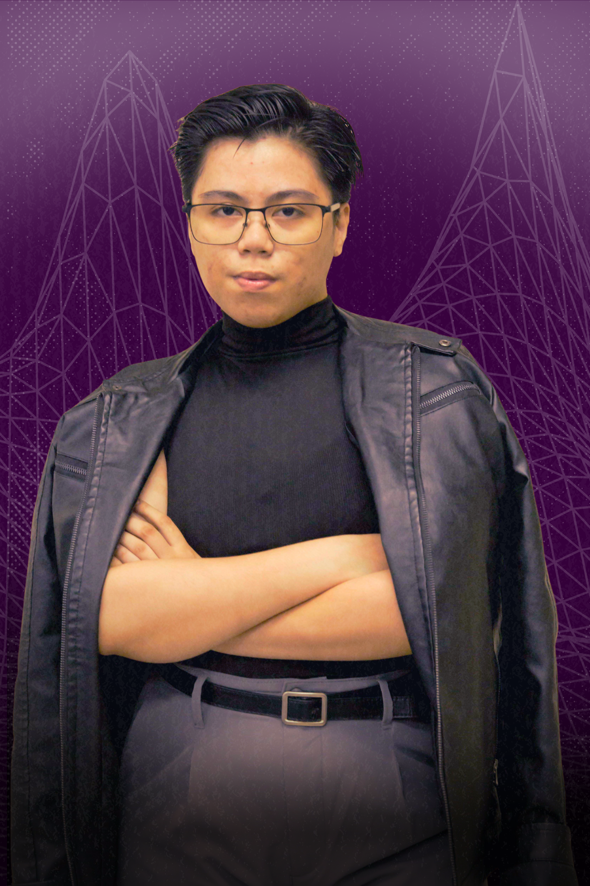
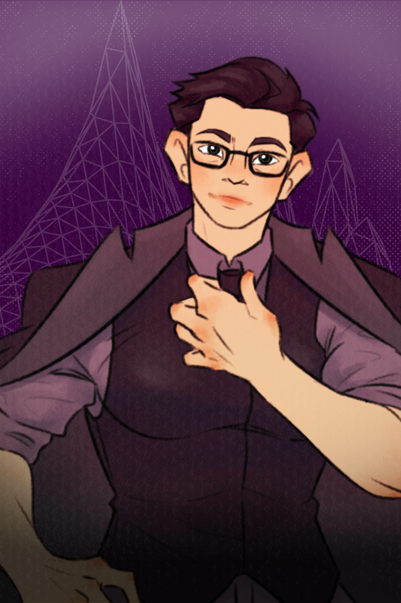

My profile
Experience, education, skills and certifications.


Tap or drag to flip
Hi, I’m Marienel
I’m a 4th-year BS Information Technology student at National University – Manila, majoring in Multimedia Arts and Animation.
My strongest work is in graphic design and digital art. I also edit audio and video, and I’ve done UI/UX and front-end work. I’ve taken freelance commissions since 2021 and served as Creative Director of NU Wizards Circle.
Experience
2021 to present
Freelance digital artist
Self-employed, Philippines
- Deliver commissioned digital art and logo design for clients who find me through referrals and word of mouth.
- Produce original digital artwork in Krita, with earlier experience in ibisPaint.
- Design graphics and layouts in Canva to meet client requirements.
Aug 2024 to Jun 2025
Creative Director
NU Wizards Circle, Manila
- Managed the organization's social media presence.
- Designed publication materials (pubmats) and layouts in Canva.
- Kept branding and visual theme consistent across all organizational materials.
Education
2023 to present
BS in Information Technology, major in Multimedia Arts and Animation
National University - Manila. Now in 4th year.
2021 to 2023
Senior High School, STEM strand
Marinduque State College (now Marinduque State University). Graduated with honors.
Skills
- Design and art
- Graphic Design
- Visual Design
- Digital Art
- Digital Illustration
- Digital Painting
- Character Design
- Logo Design
- Graphic Layout
- Digital Publishing
- Storyboarding
- Media and development
- UI/UX Design
- Front-End Development
- Audio Editing
- Video Editing
- Tools
- Krita
- ibisPaint
- Canva
- Unity
- Visual Studio Code
- CapCut
- Audacity
- Professional
- Creative Direction
- Brand Consistency
- Social Media Management
- Publishing Management
Certifications
- Canva Essentials, Canva2026
- Unity Essentials, Unity2026
- Unity Creative Core, Unity2026
- Unity Game Development, Unity2026
- Unity VR Development, Unity2026
- PMI Project Management Ready, Project Management Institute2026
- IT Specialist - Cybersecurity, Certiport2026
- Networking Basics, Cisco Networking Academy2025
- Networking Devices and Initial Configuration, Cisco Networking Academy2025
- Computer Hardware Basics, Cisco Networking Academy2025